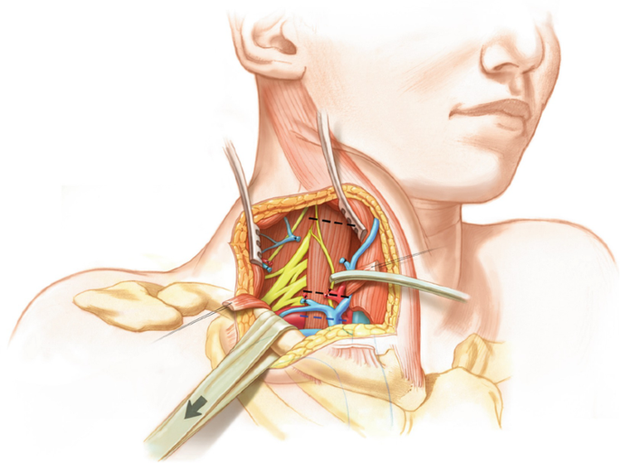
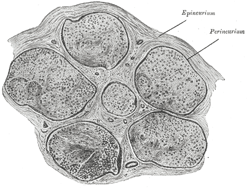
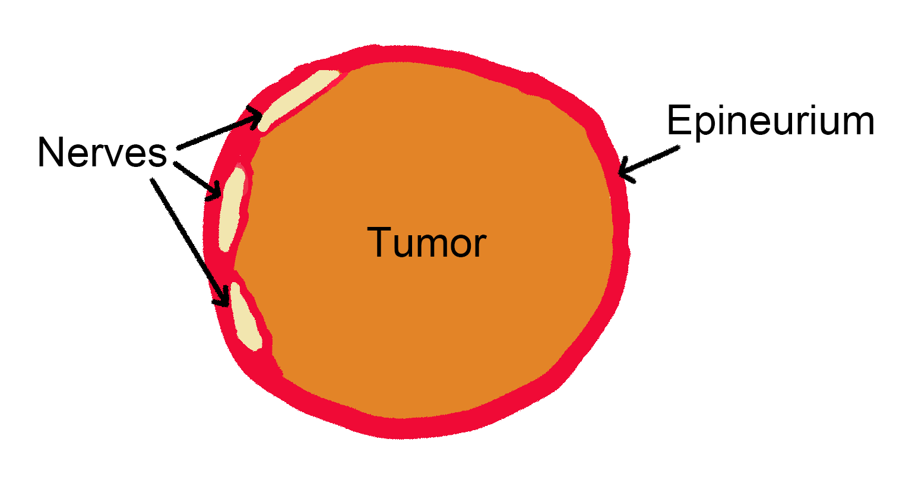

Surgery for Peripheral Nerve Tumors
Department of Neurosurgery
Tokai
University
Chang HS, MD, Sano F, MD, Sorimachi T, MD
2022-09-29
Peripheral Nerve Tumors
- Originally, a territory of “Neuro”surgery
- Competing disciplines
Types of peripheral nerve tumors
- Schwannoma: ~80%
- Neurofibroma: 10 - 20%
- Perineuroma
- Ganglineuroma
- Malignant PNST
Locations of Schwannomas
- It can arise in any part of the body.
- Surgically challenging locations
- Brachial plexus
- Functioning nerves (Vagus, Median, Ulnar, Radial, etc.)
Challenges for Neurosurgeons
- Approach to unfamiliar regions
- Preservation of nerve function
- Radical subcapsular removal
Brachial Plexus Exposure

Puffy RC and Spinner RJ 2021
Perineurium and epineurium

Radical subcapsular removal

Case Series
9 cases of peripheral nerve tumors (2000-2022)
- Brachial Plexus: 5
- Upper Trunk: 2
- Middle Trunk: 1
- Lower Trunk: 2
- Median Nerve (axilla): 1
- Vagal Nerve: 1
- Cervical neurofibroma: 2
Postop MRI (T1 with Gadolinium)
Outcome and Complications
- Neurological complications
- One transient deltoid weakness (lower trunk schwannoma)
- One transient dysphagia (cervical neurofibroma)
- No recurrence
- Median follow-up period: 6.6 years
Conclusions
- Neurosurgeons are qualified to treat peripheral nerve tumors.
- Supraclavicular approach can be easily learned and applied to
brachial plexus tumors.
- Microsurgical radical subcapsular removal is useful for the safe and
effective removal of schwannomas.